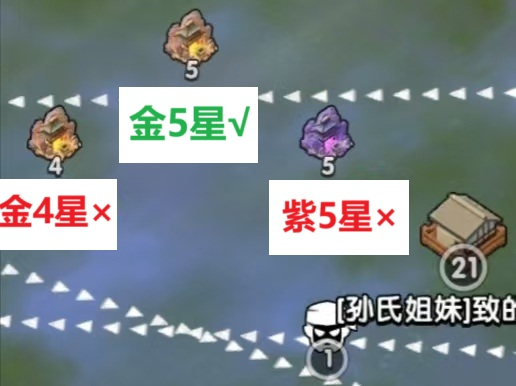
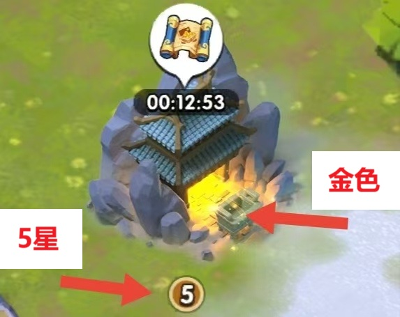

【宝藏】
- 每天可挖宝10次 + 护助盟友5次 + 掠夺他人5次。多在线/挂机，领居民送礼。
1）挖：可挑时间去挖，以便挖完尽快收，免得被抢。自动上阵武将。
2）护：多看看“盟友宝藏”页的倒计时，看到金色马上点帮助。
3）夺：地图上找金色5，快到期的分享盟里，到期(有火焰标志)快掠夺。各个一级城附近多。再大地图看看聊天框以上的★标记按钮里的。（地图里的金5星样子如下：）


4）摆到藏品阁。先攒，别去卖/分解。角逐周三分解。
【兑换码】卡卡在三国冰河时代等你
【天工策】《防御》的最左和中间列必需。最右列随意（入口在：荆州之战-赛季-天工策-防御）